library(tidyverse)
library(tidylog)
library(palmerpenguins)
theme_set(theme_minimal())- 1
-
Set all plots to use
theme_minimal()
Data distributions are central to data analysis. We’ll explore several methods for visualizing distributions in R using ggplot2 and related packages.
Let us begin by loading the necessary packages and setting the theme.
library(tidyverse)
library(tidylog)
library(palmerpenguins)
theme_set(theme_minimal())theme_minimal()
Histograms are a common way to visualize the distribution of a single variable. In this example, we plot the distribution of flipper_length_mm from the penguins dataset:
penguins |>
ggplot(aes(x = flipper_length_mm)) +
geom_histogram(color = "white")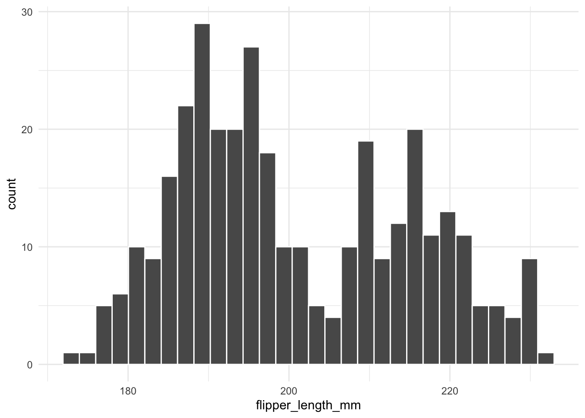
A frequent mistake is to call geom_histogram() without specifying the binwidth. When you don’t set the bin width, ggplot2 uses a default value that may not reveal important details in your data. The example below shows how changing the bin width affects the histogram:
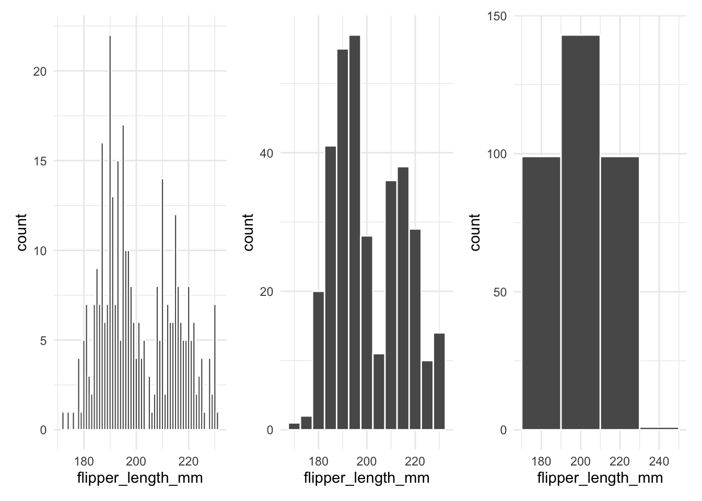
Density plots provide a smooth estimate of the distribution. For example, the following code creates a density plot for flipper_length_mm:
penguins |>
ggplot(aes(x = flipper_length_mm)) +
geom_density(fill = "lightblue")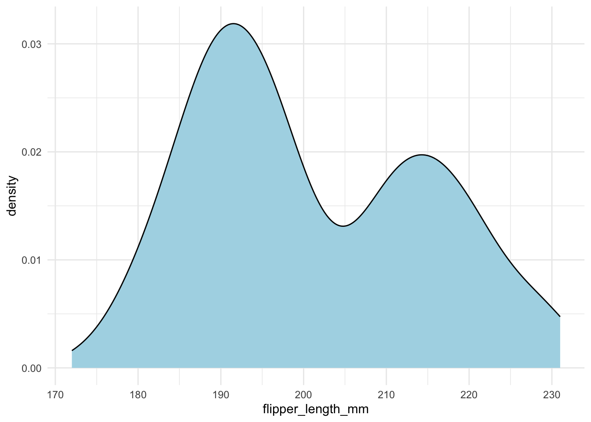
A common pitfall is that the density curve may extend beyond the actual data range. To illustrate, if you normalize your data to range from 0 to 1, the density estimate might still spill outside these bounds. Consider the following example where we normalize the flipper lengths and then set explicit x-axis limits:
penguins |>
drop_na(flipper_length_mm) |>
mutate(flipper_length_mm_normalized = (flipper_length_mm - min(flipper_length_mm)) / (max(flipper_length_mm) - min(flipper_length_mm))) |>
ggplot(aes(x = flipper_length_mm_normalized)) +
geom_density(fill = "lightblue") +
xlim(-.2, 1.2)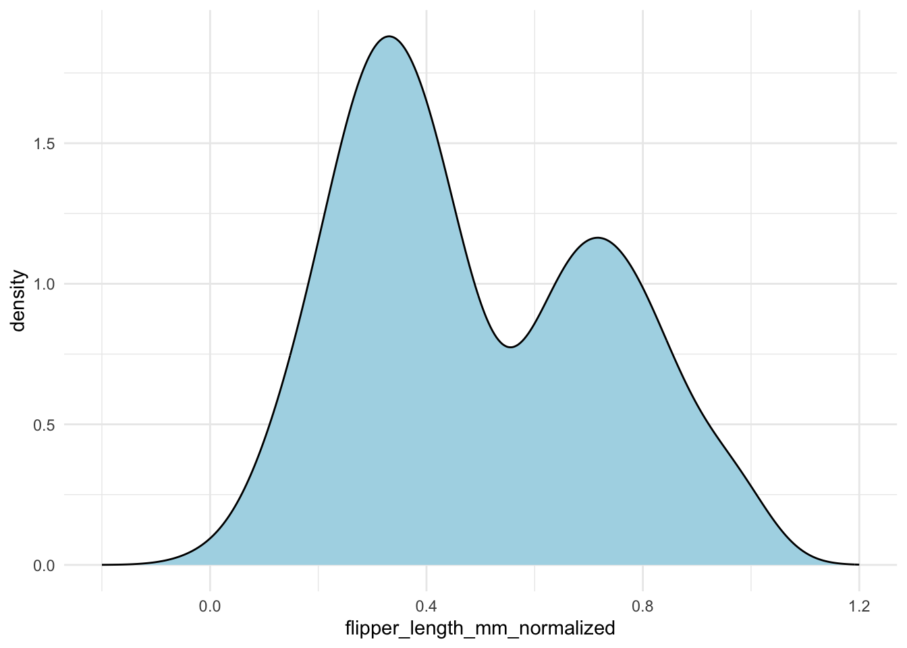
Without careful inspection, you might not notice that the density extends outside the [0, 1] interval. To fix this, you can specify the bounds in geom_density():
penguins |>
drop_na(flipper_length_mm) |>
mutate(flipper_length_mm_normalized = (flipper_length_mm - min(flipper_length_mm)) / (max(flipper_length_mm) - min(flipper_length_mm))) |>
ggplot(aes(x = flipper_length_mm_normalized)) +
geom_density(fill = "lightblue",
bounds = c(0, 1)) +
xlim(-.2, 1.2)geom_density() to ensure the density curve stays within the [0, 1] interval.
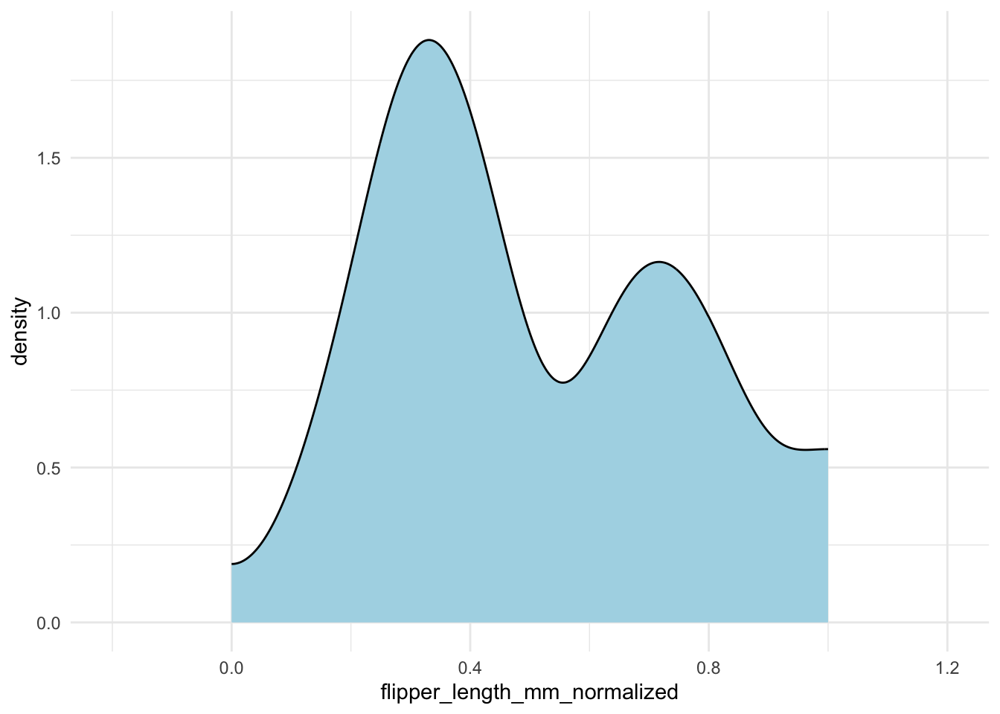
The ggalt package’s geom_bkde() function can sometimes provide a better density estimate.
As a general rule, DON’T use Histograms naively when dealing with multiple variables. For example, all three examples below are difficult to efficiently compare the distribution of flipper length across different species.
Each group is plotted in the same space with transparency:
penguins |>
ggplot(aes(x = flipper_length_mm, group = species, fill = species)) +
geom_histogram(color = "white", alpha = .5,position = "identity") +
theme(legend.position = "top")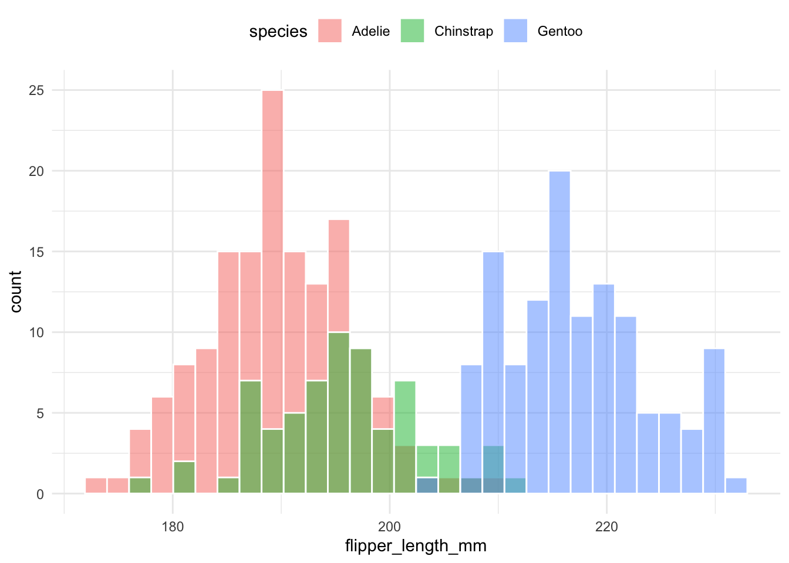
Histograms are stacked on top of each other to compare proportions:
penguins |>
ggplot(aes(x = flipper_length_mm, group = species, fill = species)) +
geom_histogram(color = "white", position = "stack") +
theme(legend.position = "top")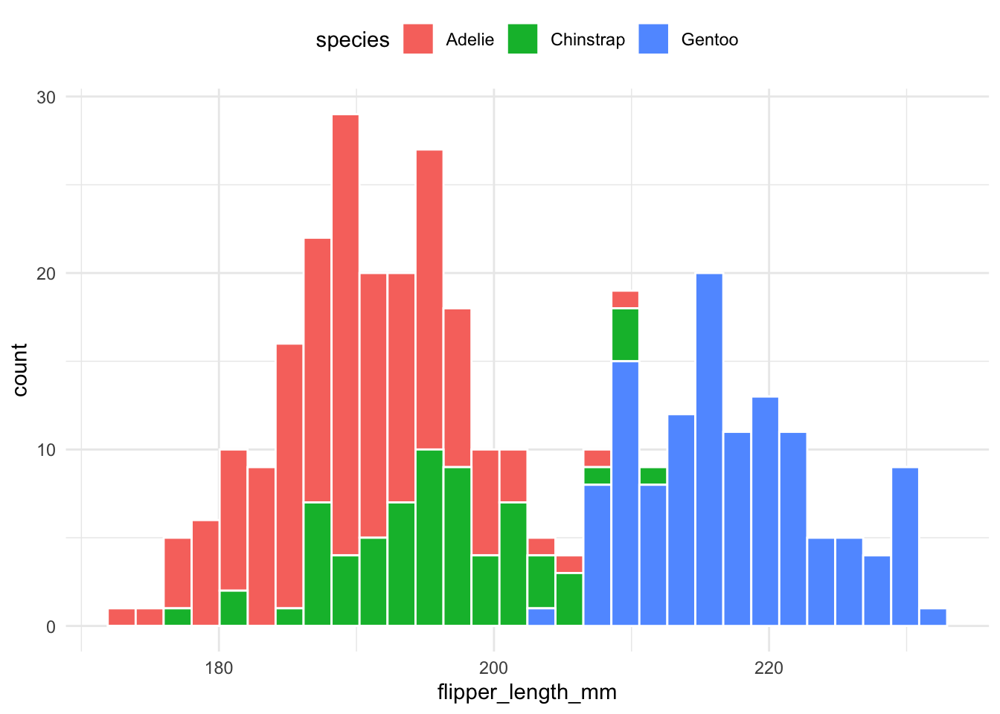
Histograms for each group are placed next to one another for easier comparison:
penguins |>
ggplot(aes(x = flipper_length_mm, group = species, fill = species)) +
geom_histogram(color = "white", position = "dodge") +
theme(legend.position = "top")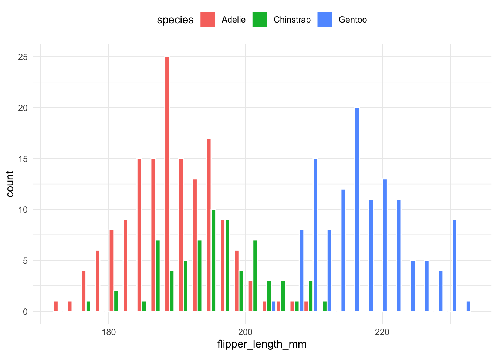
Density plots are generally easier to compare when multiple groups are involved. The following code overlays density curves for each species:
penguins |>
ggplot(aes(
x = flipper_length_mm,
group = species,
fill = species,
color = species)) +
geom_density(alpha = .5) +
theme(legend.position = "top")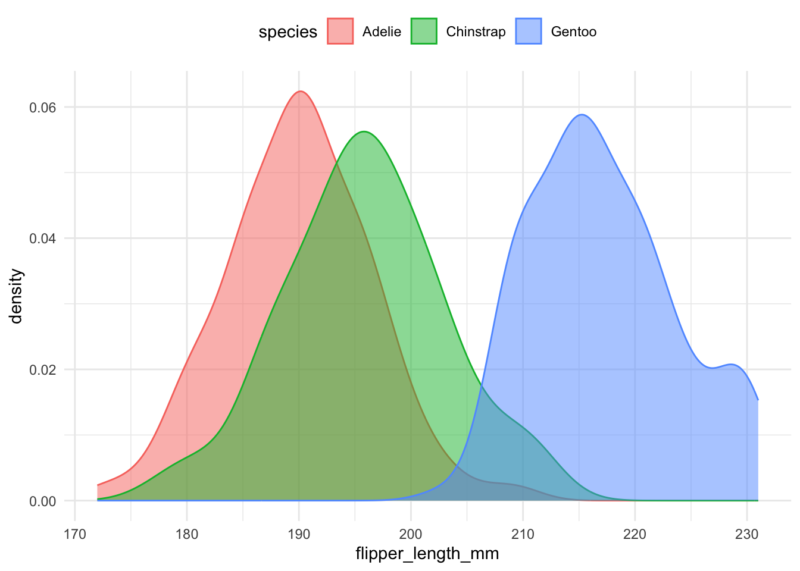
As we mentioned before, it is generally a good idea to avoid using legends. The library geomtextpath provides a way to add text to the density plot.
library(geomtextpath)
penguins |>
ggplot(aes(x = flipper_length_mm, group = species, color = species)) +
geom_textdensity(alpha = .5, aes(label = species), size = 5) +
theme(legend.position = "none")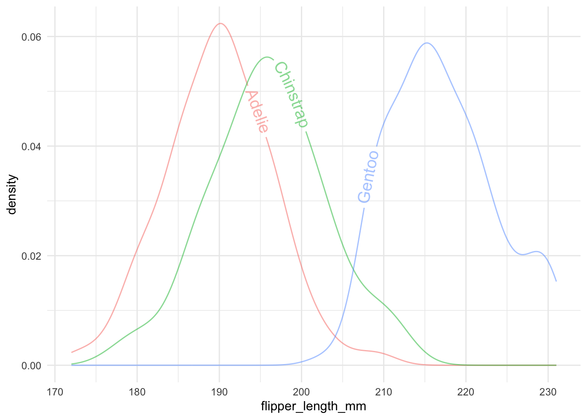
There are many variations of density/histogram plots that are more informative and aesthetically pleasing. I particularly like two of them.
For datasets with more than two groups, faceting and highlighting each group can be very effective. We can easily do this with the gghighlight package:
library(gghighlight)
penguins |>
ggplot(aes(x = flipper_length_mm, fill = species)) +
geom_histogram(color = "white") +
gghighlight() +
facet_wrap(~species)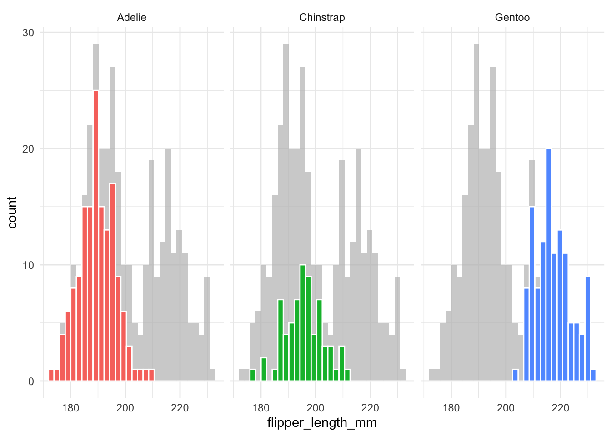
When comparing two groups, a mirror density plot places one density curve above and one below the horizontal axis. This example compares male and female penguins:
penguins |>
ggplot(aes(x = flipper_length_mm)) +
geom_density(
data = filter(penguins, sex == "male"),
aes(y = ..density..),
alpha = .5, fill = "#69b3a2", color = "black") +
geom_label( aes(x=180, y=0.02, label="male"), color="#69b3a2", size = 5) +
geom_density(
data = filter(penguins, sex == "female"),
aes(y = -..density..),
alpha = .5, fill = "#404080", color = "black") +
geom_label( aes(x=228, y=-0.01, label="female"), color="#404080", size = 5)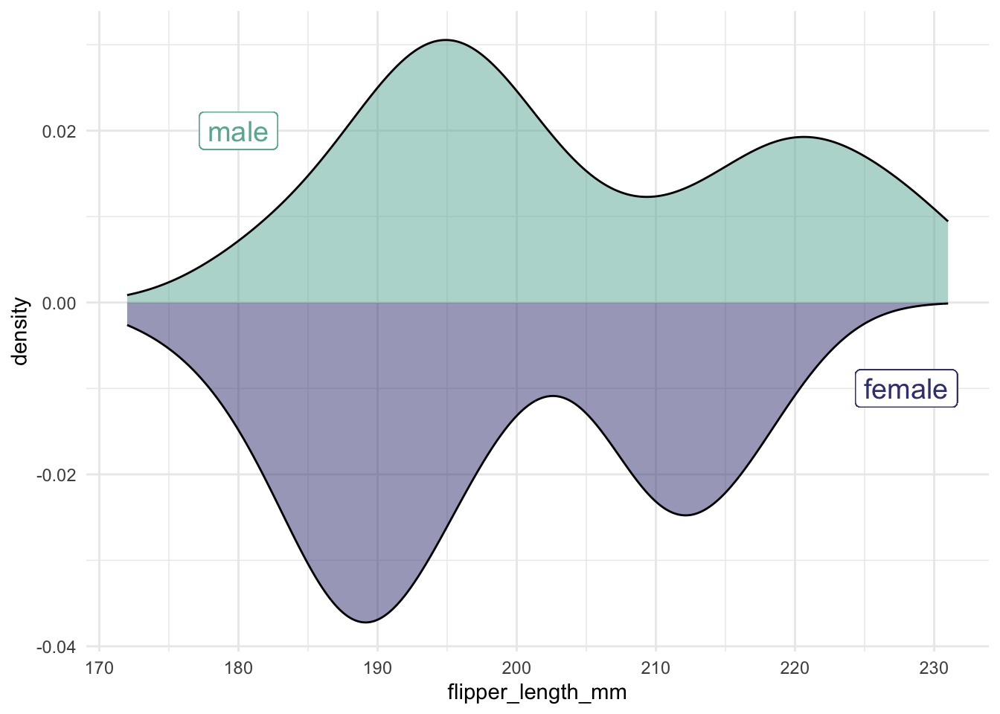
Sometimes, you need to display distributions for many groups simultaneously. For example, we use the lincoln_weather dataset (from the ggridges package) to demonstrate different approaches.
We first clean the data by selecting relevant columns and extracting the month from the date:
library(ggridges)
lincoln_weather_clean <- lincoln_weather |>
select(CST, `Mean Temperature [F]`) |>
mutate(CST = ymd(CST)) |>
mutate(month = month(CST, label = TRUE))One approach is to show the mean along with an error bar. Always be explicit about how you compute the error bar!
lincoln_weather_clean |>
group_by(month) |>
summarise(mean = mean(`Mean Temperature [F]`),
lower = quantile(`Mean Temperature [F]`, 0.025),
upper = quantile(`Mean Temperature [F]`, 0.975)) |>
ggplot(aes(x = month, y = mean, ymin = lower, ymax = upper)) +
geom_pointrange()group_by: one grouping variable (month)
summarise: now 12 rows and 4 columns, ungrouped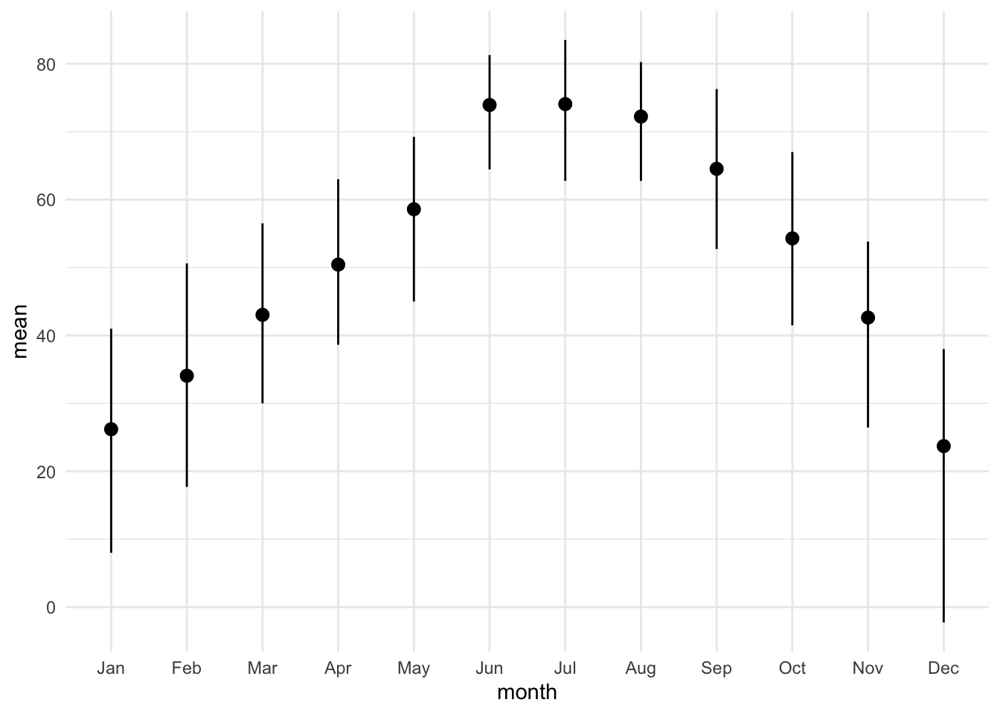
lincoln_weather_clean |>
group_by(month) |>
summarise(mean = mean(`Mean Temperature [F]`),
sd = sd(`Mean Temperature [F]`)) |>
ggplot(aes(x = month, y = mean)) +
geom_pointrange(aes(ymin = mean - sd, ymax = mean + sd))group_by: one grouping variable (month)
summarise: now 12 rows and 3 columns, ungrouped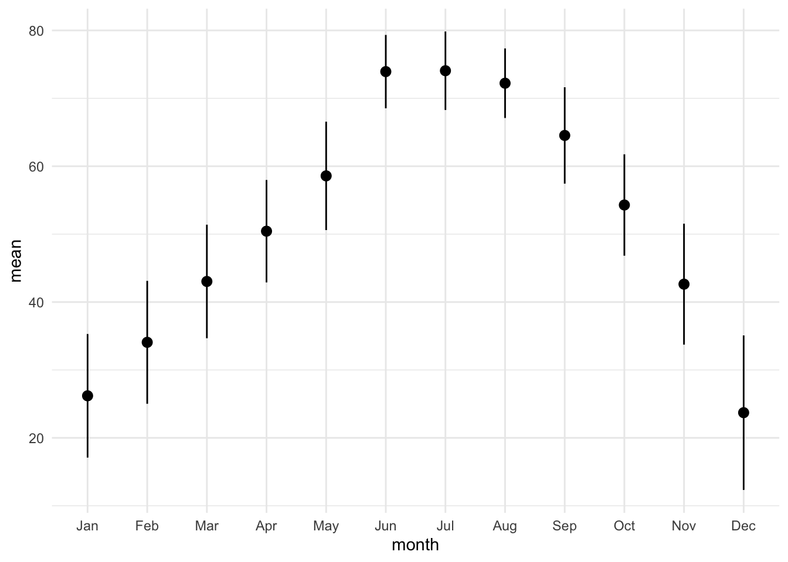
lincoln_weather_clean |>
group_by(month) |>
summarise(mean = mean(`Mean Temperature [F]`),
se = sd(`Mean Temperature [F]`) / sqrt(n())) |>
ggplot(aes(x = month, y = mean)) +
geom_pointrange(aes(ymin = mean - se, ymax = mean + se))group_by: one grouping variable (month)
summarise: now 12 rows and 3 columns, ungrouped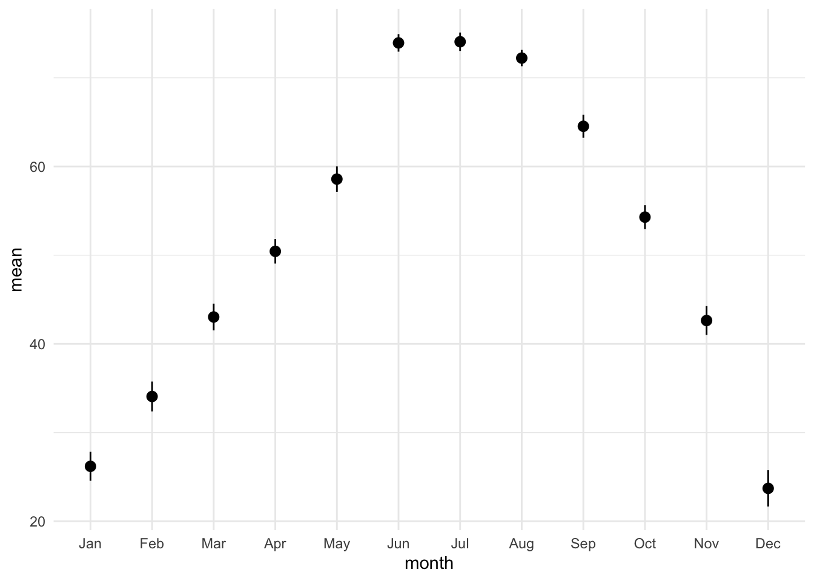
Whenever possible, display the full distribution rather than just summary statistics.
lincoln_weather_clean |>
ggplot(aes(x = month, y = `Mean Temperature [F]`)) +
geom_boxplot() 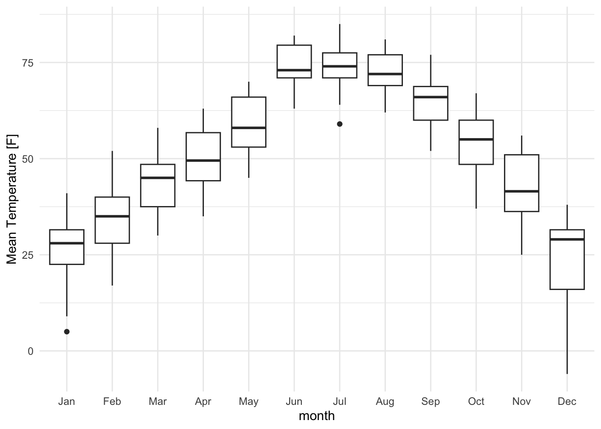
lincoln_weather_clean |>
ggplot(aes(x = month, y = `Mean Temperature [F]`)) +
geom_violin() 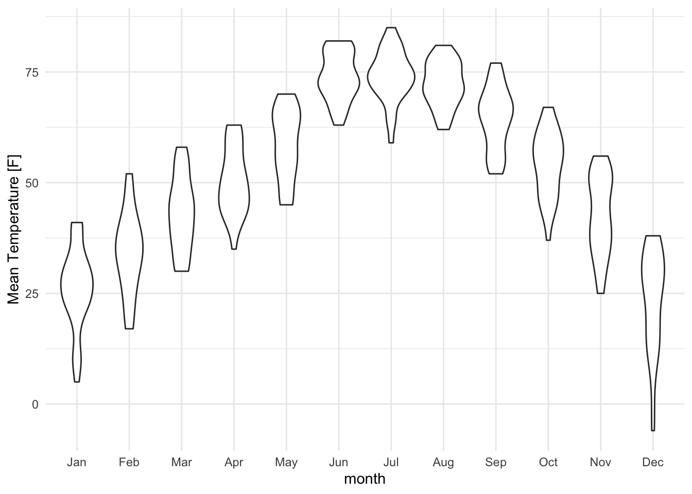
It is generally advised to use violin plots instead of boxplots, especially when the data is not normally distributed (which is often the case). The animated comparison below illustrates why violin plots often convey more information than boxplots.

It’s a good idea to show the raw data along with any summaries. This is especially true for real data, where we often have to work with limited samples. It is less useful, or sometimes even advised against, for synthetic data.
lincoln_weather_clean |>
ggplot(aes(x = month, y = `Mean Temperature [F]`)) +
geom_point(alpha = .5)Jittering helps avoid overlapping points:
lincoln_weather_clean |>
ggplot(aes(x = month, y = `Mean Temperature [F]`)) +
geom_jitter(alpha = .5)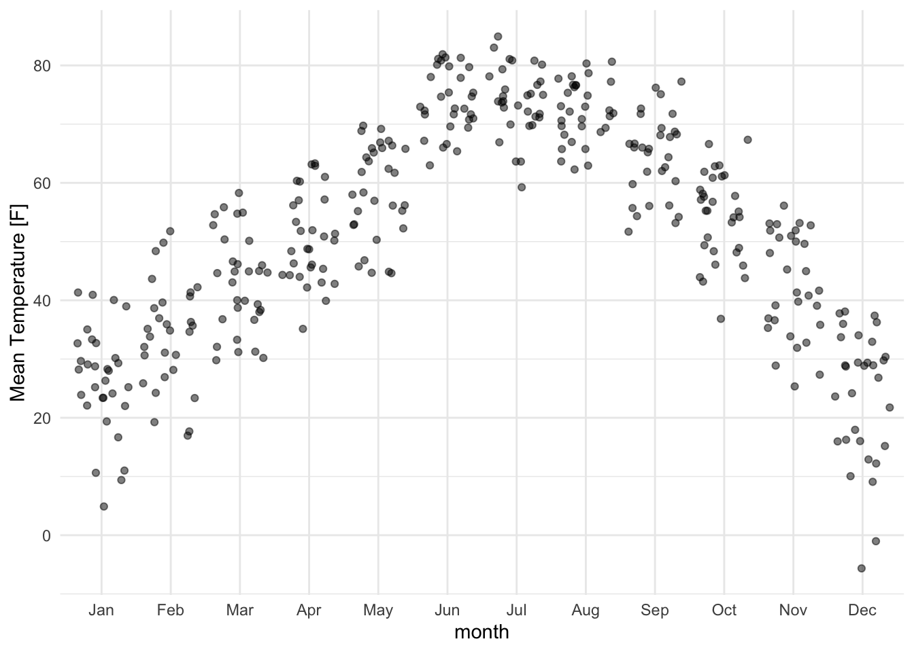
For more controlled jittering, use the ggbeeswarm package:
lincoln_weather_clean |>
ggplot(aes(x = month, y = `Mean Temperature [F]`)) +
ggbeeswarm::geom_quasirandom(varwidth = TRUE) 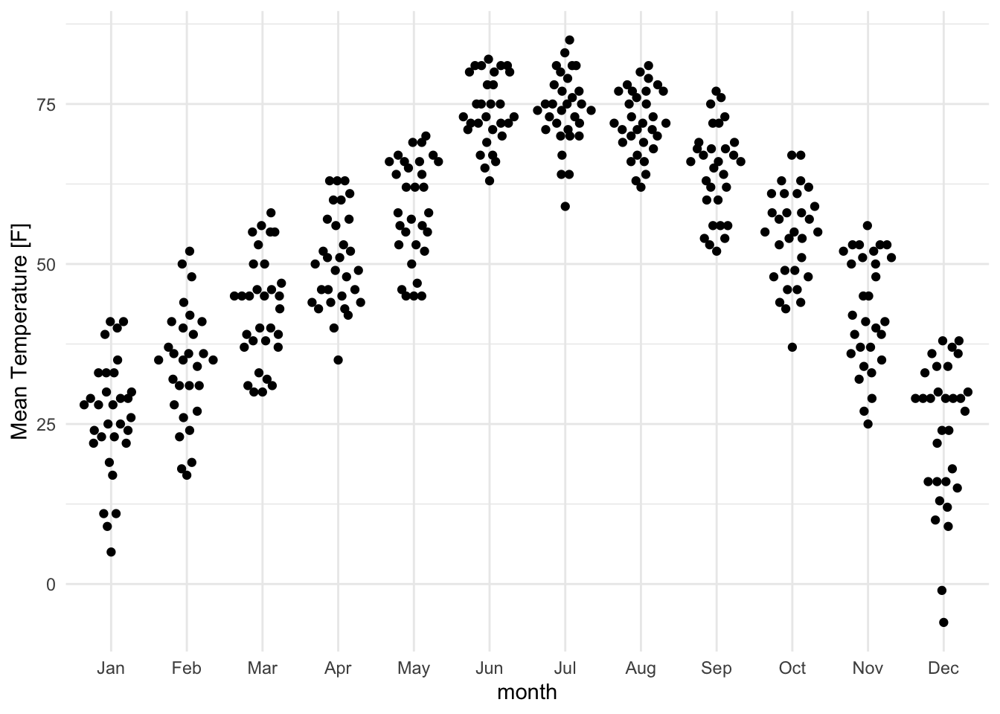
Even better, why not show both the data and the distribution?
lincoln_weather_clean |>
ggplot(aes(x = month, y = `Mean Temperature [F]`)) +
geom_violin(alpha = .5) +
ggforce::geom_sina()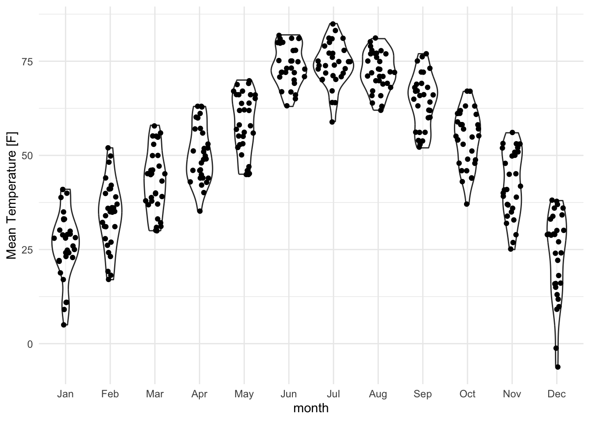
lincoln_weather_clean |>
ggplot(aes(x = month, y = `Mean Temperature [F]`)) +
gghalves::geom_half_violin(alpha = .5) +
gghalves::geom_half_dotplot(method="histodot", stackdir="up", binwidth = 1)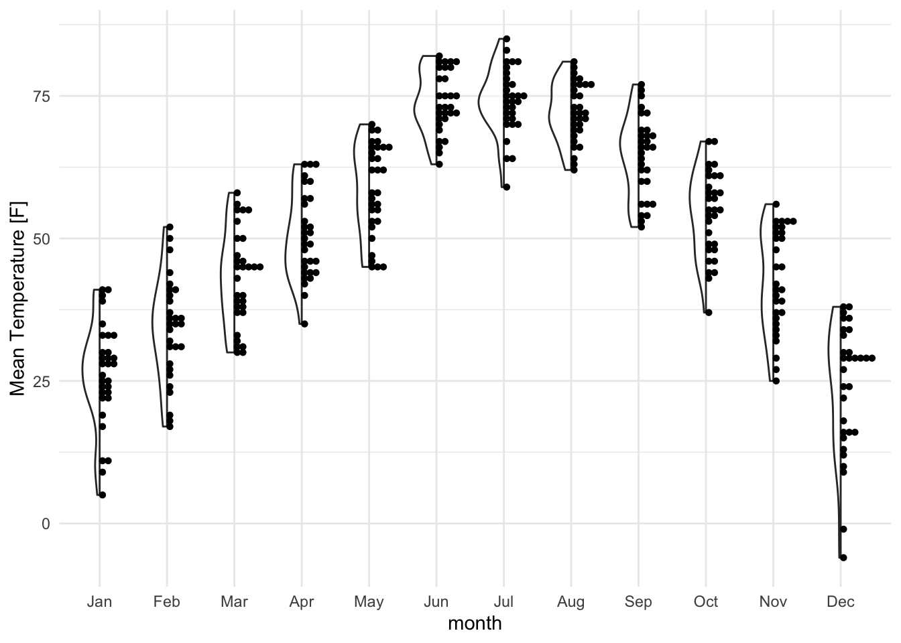
Ridge plots (also known as joy plots) are great for comparing the distribution of a variable across many groups in a compact format. It provides a horizontal axis and a vertical density plot for each group.
library(ggridges)
lincoln_weather_clean |>
ggplot(aes(
x = `Mean Temperature [F]`,
y = month,
fill = month,
color = month
)) +
geom_density_ridges(alpha = .5) +
theme_ridges() +
theme(legend.position = "none") 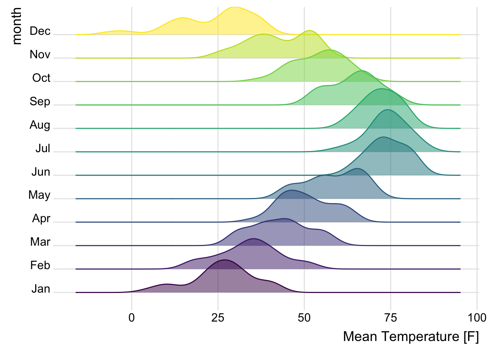
Horizon plots are an effective way to visualize time series data. It is extremely useful when you need to compare even more variables. You can use the ggHoriPlot package to create them. Check out the documentation here for stunning examples.